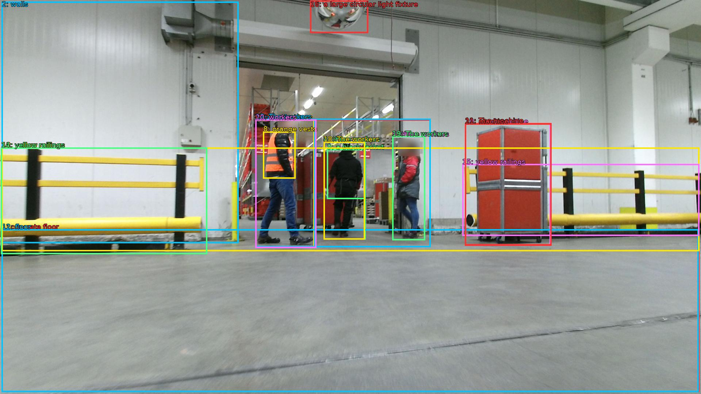

The image shows a large industrial space with a concrete floor and white walls. There are three workers in the image, two of whom are wearing orange vests and one is wearing a black jacket. They are walking towards a red machine that appears to be a conveyor belt. The machine is moving along the floor and there are yellow railings on either side of the image. Above the machine, there is a large circular light fixture hanging from the ceiling. The workers appear to be inspecting or inspecting the machine.

Original · Caption raw · Grounding raw · Koordinate
Številke so lokalni ID regije. Dolge slikovne oznake so skrajšane; spodaj so celotne fraze. Napovedane regije se lahko prekrivajo ali opisujejo skupine.
| ID | Celotna fraza | bbox xyxy |
|---|---|---|
| 1 | concrete floor | [4.799999713897705, 628.02001953125, 1915.199951171875, 1074.06005859375] |
| 2 | walls | [4.799999713897705, 4.860000133514404, 653.760009765625, 666.9000244140625] |
| 3 | three workers | [699.8399658203125, 327.7799987792969, 861.1199951171875, 678.780029296875] |
| 4 | three workers | [886.0799560546875, 388.260009765625, 1001.2799682617188, 656.1000366210938] |
| 5 | three workers | [1074.239990234375, 374.2200012207031, 1164.47998046875, 658.260009765625] |
| 6 | two of whom | [699.8399658203125, 327.7799987792969, 1179.8399658203125, 677.7000122070312] |
| 7 | two of whom | [699.8399658203125, 327.7799987792969, 863.0399780273438, 678.780029296875] |
| 8 | orange vests | [720.9599609375, 360.1800231933594, 809.2799682617188, 489.780029296875] |
| 9 | a black jacket | [895.6799926757812, 408.780029296875, 999.3599853515625, 545.9400024414062] |
| 10 | a red machine | [1273.919921875, 338.58001708984375, 1508.159912109375, 672.300048828125] |
| 11 | The machine | [1273.919921875, 337.5, 1510.0799560546875, 673.3800048828125] |
| 12 | floor | [4.799999713897705, 628.02001953125, 1913.2799072265625, 1074.06005859375] |
| 13 | yellow railings | [4.799999713897705, 404.46002197265625, 1915.199951171875, 688.5] |
| 14 | yellow railings | [2.879999876022339, 404.46002197265625, 567.3599853515625, 696.0599975585938] |
| 15 | yellow railings | [1266.239990234375, 449.82000732421875, 1915.199951171875, 646.3800048828125] |
| 16 | a large circular light fixture | [849.5999755859375, 1.6200001239776611, 1008.9599609375, 90.18000030517578] |
| 17 | The workers | [699.8399658203125, 325.6200256347656, 1179.8399658203125, 677.7000122070312] |
| 18 | The workers | [886.0799560546875, 388.260009765625, 999.3599853515625, 656.1000366210938] |
| 19 | The workers | [1074.239990234375, 373.1400146484375, 1164.47998046875, 658.260009765625] |
| 20 | workers | [699.8399658203125, 327.7799987792969, 866.8800048828125, 679.8600463867188] |
| 21 | machine | [1273.919921875, 338.58001708984375, 1510.0799560546875, 672.300048828125] |